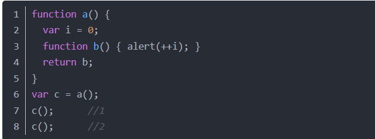
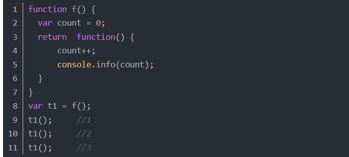

闭包
1.概念：
- 1.闭包函数：声明在一个函数中的函数，叫做闭包函数。
- 2.闭包：内部函数总是可以访问其所在的外部函数中声明的参数和变量，即使在其外部函数被返回（寿命终结）了之后。
2.特点：
- 1.让外部访问函数内部变量成为可能
- 2.局部变量会常驻在内存中；
- 3.可以避免使用全局变量，防止全局变量污染；
- 4.会造成内存泄漏（有一块内存空间被长期占用，而不被释放）
3.闭包的创建
闭包就是可以创建一个独立的环境，每个闭包里面的环境都是独立的，互不干扰。闭包会发生内存泄漏，次外部函数执行的时 候，外部函数的引用地址不同，都会重新创建一个新的地址。但凡是当前活动对象中有被内部子集引用的数据， 那么这个时候，这个数据不删除，保留一根指针给内部活动对象。闭包内存泄漏为： key = value，key 被删除了 value 常驻内存中; 局部变量闭包升级版（中间引用的变量） => 自由变量；
闭包应用场景：


